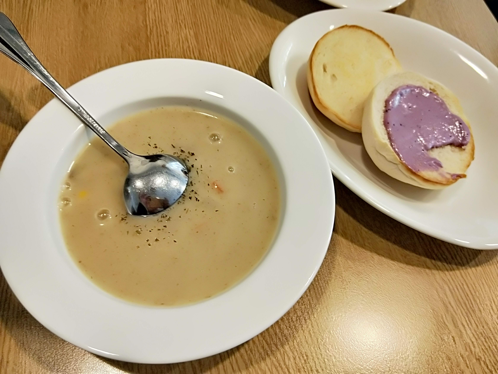

每日新鮮蔬菜濃湯:洋蔥湯、與手作的天然抹醬、純手揉手撕麵包
BOLA's cooking 寶拉料理廚房 這間餐廳是我的愛店~ 我逢人就會推薦寶拉！
而且當月壽星有8折優惠喔！(限當月壽星本人的餐點 套餐也可以)
還有套餐+80元升級可以有主廚每日現煮的濃湯
我幾乎每一次去喝的濃湯
都會不一樣，
而且不會每一次喝到的都是同一種口味的濃湯，像是我也有喝到洋蔥、南瓜、紅蘿蔔口味的濃湯，而且只要+80元就可以升級成套餐了
而且除了有濃湯外還有老闆娘手作的手撕麵包，麵包上的果醬每一次去吃也會不一樣
|
首頁
主餐: 咖哩海鮮燉飯
手作低卡蛋糕、甜點、天然健康飲品
課後心得感想